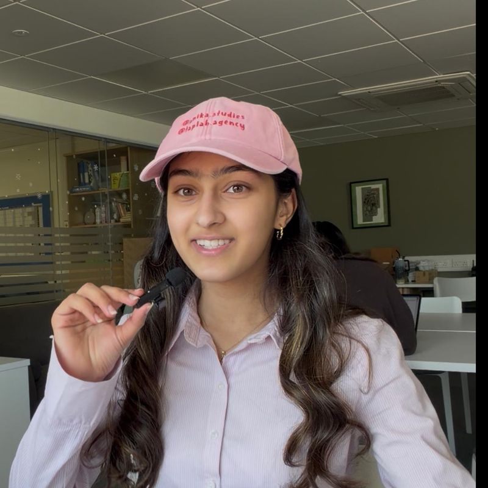

Revology
A full-stack Django revision platform with a shared notes library, RAG-rated flashcards and PDF.js-powered document previews. 18 months, four languages, one CREST Gold Award.
DjangoPythonBulmaJS
View project
I'm Anika — a computer science student looking to solve problems people don't realise they have. My latest projects span a Django revision platform, training an AI agent to make cloud deployment greener, and turning that same curiosity into educational content for 30,000+ students.

Designed and created a model for the ideal game controller for a Nintendo Switch.
Completed Harvard University's Introduction to Computer Science at only 13 — first real exposure to algorithmic thinking, primarily using C++.
Programmed a scientific calculator website using JavaScript, HTML and CSS.
Created a Django-based edtech platform — combining student surveys and web development to create the ultimate revision resource.
Created an exporter handling pull request metrics in Python for the Scientific Computing department.
Developed the circuitry and embedded control system software for a model missile using a Raspberry Pi.
Built a Gemini-powered decision-matrix agent for sustainable cloud deployment — formally published on Zenodo.
Selected as a finalist (top ~10%) for Leaf's Dilemmas and Dangers in AI course — five weeks ranging from neural networks and mechanistic interpretability to AI misalignment issues such as specification gaming.
As a programmer in C++, our team reached Nationals through our use of creative programming, including a military tank steering system and match versatility features.
Flown to Jane Street's headquarters for placing 2nd of 980 teams worldwide in the Technical Computing Award.
Global advisory council, where our AI, Cognition and Human Thinking Lab's provocation asks, “Whose mind is at the table when AI joins the meeting?”.
Experimenting with partially automated workflows and further discovering the wonders of UI/UX.
TBC...
← scroll →
A revision platform for students who can't find their notes. An AI agent for startups who can't afford a cloud consultant. A robot that has to make decisions in real time. Each taught me something different about robust code.
A full-stack Django revision platform with a shared notes library, RAG-rated flashcards and PDF.js-powered document previews. 18 months, four languages, one CREST Gold Award.
A Gemini-powered decision-matrix tool that gives startups a sustainability-first cloud deployment plan in seconds. Tested against Airbnb, Spotify and Duolingo's real growth paths.
Autonomous and driver-control code for a competition robot, written in C++ and Python. Qualified for UK Nationals 2026 on our first attempt.